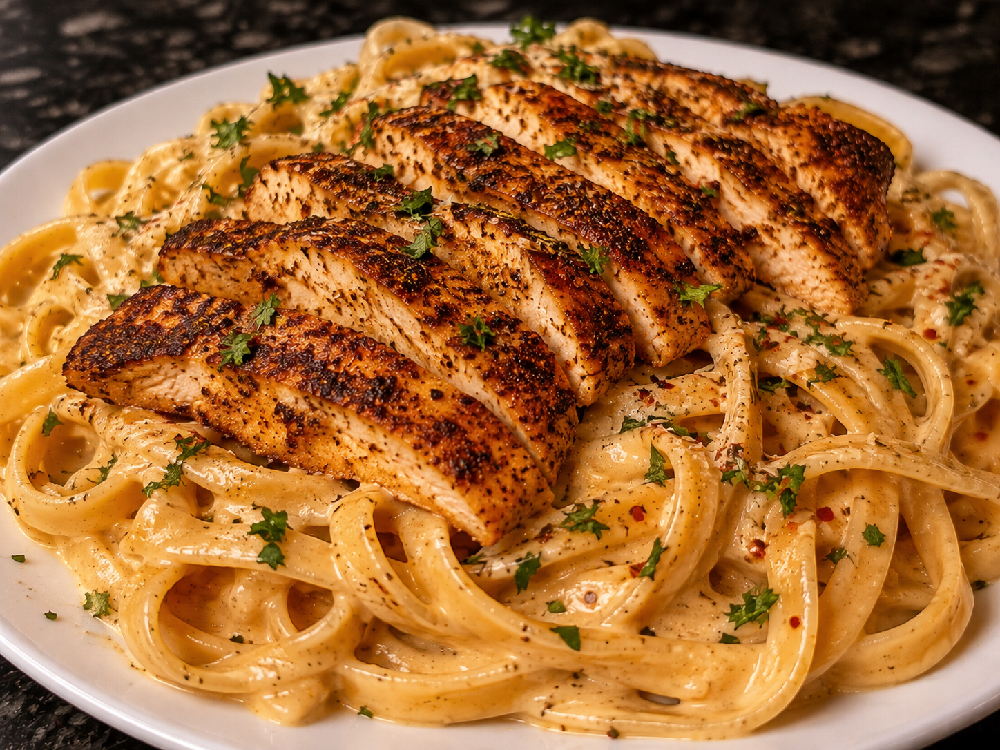

Cajun Chicken Alfredo

Cajun Chicken Alfredo is a creamy pasta dish topped with seasoned Cajun chicken. It combines a rich Alfredo sauce with bold Cajun flavor for a spicy and filling meal.
Difficulty: 3/5
Spiciness: 4/5
Recommended Season: Winter
Ingredients
- Chicken breast
- Fettuccine pasta
- Heavy cream
- Parmesan cheese
- Butter
- Garlic
- Cajun seasoning
- Salt and pepper
Instructions
- Cook the fettuccine pasta.
- Season the chicken with Cajun seasoning.
- Cook the chicken until it is fully cooked.
- Make the Alfredo sauce with butter, garlic, heavy cream, and Parmesan cheese.
- Add the pasta to the Alfredo sauce and mix together.
- Slice the chicken and place it on top of the pasta.
Recommendation
Cajun Chicken Alfredo is a good choice for dinner or for anyone who enjoys creamy pasta with a spicy Cajun flavor.